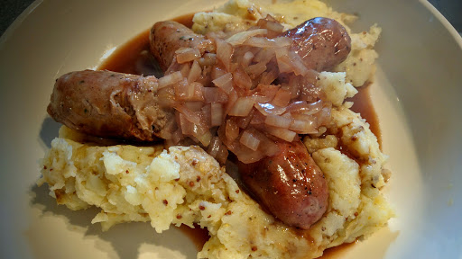

Sausages & mash with cumberland sauce
Ingredients
- 12 good quality sausages
- 1 tbsp olive oil to fry
- 4-5 medium potatoes
- 3 tbsp cream
- 3 tbsp cream
- 1 tbsp olive oil
- 1 onion, sliced
- 1 tbsp plain flour
- 1/2 mug Marsala wine (or sherry)
- zest of lemon
- 2 tbsp blackcurrant jelly
- 1 mug water
- 1 beef stock cube
Instructions
- Preheat the oven to 180°C/Gas 6. Put the sausages on a roasting tray and sprinkle with oil and salt and pepper. Place in the oven for 40 minutes.
- Peel the potatoes and cut into 2 cm chunks. Place in boiling water and then simmer for 10 minutes. Drain and return to the pan. Mash with the cream, or butter, and season with salt and pepper. Set to one side until needed.
- Meanwhile, make the sauce. Heat the oil in a frying pan and fry the onions until it begins to soften. Add the flour and cook for 30 seconds, mixing thoroughly. Add the rest of the ingredients and bring to the boil. The sauce should thicken slightly. Simmer for 2-3 minutes.
- Serve the potatoes and sauce with the sausages.
Source
Nosh: Quick & EasyShort URL Long URL Print